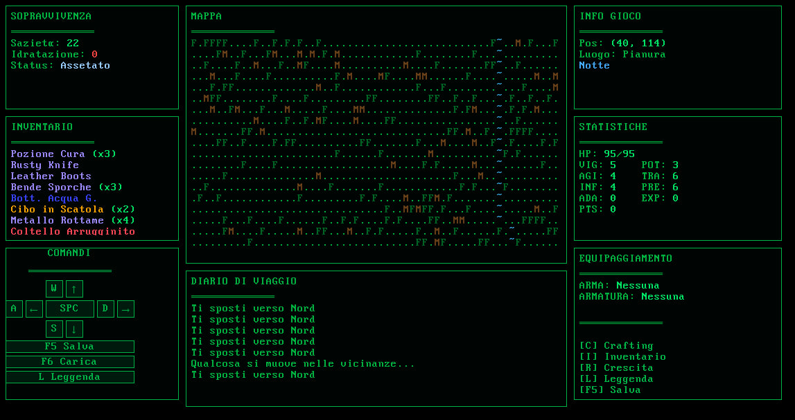
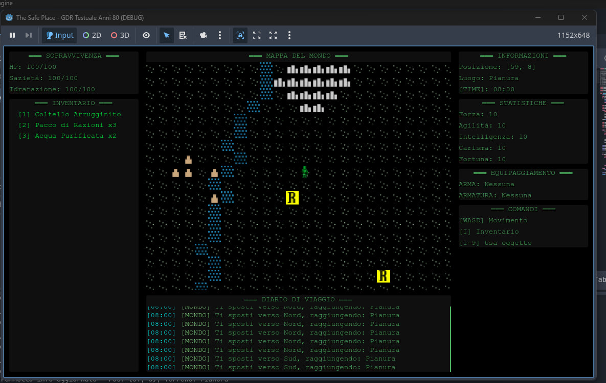

Quando su YouTube iniziai a vedere che tra le evoluzioni di Gemini, l'LLM di Google, c'era una straordinaria capacità di sviluppare codice che andava ben oltre l'essere un semplice assistente per gli sviluppatori, mi si accese un'idea in testa. Era un'idea che avevo da tantissimo tempo e che mi riporta alla mia infanzia, più o meno.
L'Origine: Un Ricordo d'Infanzia
Tantissimi anni fa, nell'era in cui la tv pubblica, ma anche alcune tv locali, usavano degli home computer e le connessioni telefoniche per fare dei giochi a premi, vidi questo strano, bellissimo videogioco. Consisteva in un cursore che doveva essere mosso, tramite comandi direzionali, in una mappa a caselle. In queste caselle c'erano delle "R", i ristori, ma ci potevano anche essere dei bonus o dei malus, sia visibili che nascosti.
La memoria di questo gioco, del quale non ricordo nient'altro – né nome, né programma tv, né canale televisivo – mi è rimasta stampata in testa per tutto il resto della mia vita. A occhio e croce sembrava uno ZX Spectrum: i colori erano quelli, il lampeggio e il tipo di "character" ASCII erano inconfondibili. E io, da allora, ho sempre ambito a ricostruire quel gioco.
Dal Python al Sogno Irrealizzabile
Negli anni, dato che da ragazzo ero molto bravo con il Basic del Commodore 64, mi sono sempre ripromesso di studiare un linguaggio di programmazione che mi permettesse di riprodurre questa fissa. Iniziai a studiare il Python, che mi sembrava la cosa più simile, sia sintatticamente che nella logica, al Basic originale che conoscevo io, ma con un'infinita potenza in più. Nel mio percorso di studio era come se mi si riaccendessero ricordi e lampadine, ma mi resi presto conto che non avevo né il tempo, né Python era veramente quello che stavo cercando.
Nel mentre, il concept di questo gioco si sviluppava nella mia testa. L'idea di base rimaneva quella, ma con delle differenze sostanziali: come prima cosa, volevo un look da terminale retro-computazionale di fine anni '70, inizio anni '80. Poi ci ho aggiunto alcuni elementi RPG, cercando di farlo diventare un gioco di ruolo testuale, in pieno stile home computer degli albori.
L'Esperimento: Un Nuovo Flusso di Lavoro
Ma la mia, a quel punto, non era più soltanto una fissa relegata al gioco in sé. Era diventata un'ossessione diversa: volevo dimostrare, a me stesso prima che agli altri, se Gemini fosse veramente in grado di sviluppare un intero gioco, per quanto semplice, senza il mio intervento diretto sul codice, ma con la mia costante e minuziosa guida tecnica, creativa e strategica. E in parte, ci sono riuscito.
Il Nuovo Paradigma di Sviluppo
L'obiettivo era chiaro: usare l'IA non come assistente, ma come sviluppatore primario, guidato dalla visione strategica e creativa umana. Il flusso di lavoro si è strutturato in tre fasi distinte:
- Fase Strategica (Umana): Definizione degli obiettivi, visione creativa, architettura generale e pianificazione del progetto
- Fase di Implementazione (IA): Generazione del codice, sviluppo delle funzionalità e produzione dei contenuti seguendo le specifiche umane
- Fase di Controllo (Umana): Review del codice, testing approfondito, debugging e ottimizzazioni finali
Poi, si sa, il potere corrompe. È un fatto antropologicamente risaputo. E così è iniziata una delirante corsa verso il "si fa così, si aggiunge colà", che ha trasformato un'idea semplice in un progetto complesso, portando con sé tanta frustrazione ma anche enormi soddisfazioni. In questo continuo processo di "togli e metti", mi sono scontrato con i limiti oggettivi di uno strumento che avevo iniziato a usare senza conoscerne le problematiche, le meccaniche e i veri ostacoli. Problemi che poi, nei mesi, ho imparato – mai del tutto in senso assoluto – ad addomesticare.
Le Cinque Fasi dello Sviluppo
Il viaggio è stato tutt'altro che lineare. L'esperimento era chiaro: io definivo il "cosa" e il "perché", e l'IA doveva occuparsi del "come". All'inizio, l'efficacia di Gemini era sbalorditiva nel generare codice ripetitivo o implementare logiche semplici. Ma man mano che la complessità cresceva, emergevano le prime crepe. L'IA tendeva a generare codice ridondante, a duplicare funzioni in moduli diversi, rendendo la manutenzione un incubo. Il debugging di errori sottili, quelli legati all'interazione profonda tra le meccaniche di gioco, richiedeva un dialogo estenuante, fatto di cicli di analisi, suggerimenti specifici e correzioni guidate.
Analizzando retrospettivamente l'intero processo, è possibile identificare cinque fasi distinte che caratterizzano questo esperimento di sviluppo collaborativo con l'IA:
- Fase 1 - Euforia Iniziale: L'IA genera codice boilerplate e logiche semplici con una velocità sorprendente. L'idea sembra non solo possibile, ma rivoluzionaria.
- Fase 2 - Crescita della Complessità: Man mano che il gioco cresce, emergono problemi: codice ridondante, mancanza di coerenza architetturale e difficoltà a gestire lo stato globale.
- Fase 3 - Il "Great Map Bug": Un bug critico blocca lo sviluppo: la mappa appare vuota. Dopo giorni, si scopre che non è un errore di codice, ma di bilanciamento del gioco, un concetto che l'IA non poteva cogliere da sola.
- Fase 4 - La Deviazione: La frustrazione porta a esplorare alternative (Godot, Python/Textual), incontrando nuovi ostacoli e confermando la complessità dello sviluppo software, con o senza IA.
- Fase 5 - La Svolta e il Ritorno: Risolto il bug della mappa, si torna al progetto JS originale con nuove conoscenze, una codebase ristrutturata e una comprensione più profonda della collaborazione uomo-macchina.
Il momento più critico, che quasi mi ha fatto abbandonare tutto, è stato un bug sulla mappa di gioco. La logica sembrava creare un mondo vario, con fiumi, villaggi, città. Eppure, a schermo vedevo solo un'infinita e monotona distesa di pianure, montagne e foreste.

Per giorni, con l'IA, abbiamo esplorato ogni possibile causa: un errore nel rendering? Un problema di CSS? La console del browser che non mostrava la verità? Niente. La frustrazione era palpabile. Poi, l'illuminazione: non era un bug tecnico, ma un problema di bilanciamento. Le foreste e le montagne erano così fitte e i punti di interesse così rari che, semplicemente, non si vedevano. L'IA, pur bravissima a scrivere codice, non aveva la visione d'insieme di un game designer per capire che la sua generazione procedurale era, di fatto, sbilanciata.
In preda allo sconforto, ho persino tentato delle vie di fuga. Ho provato a migrare il progetto su Godot Engine, incappando in un bug bloccante e inspiegabile dell'engine stesso. Ho tentato la via purista del terminale con Python e la libreria Textual, ottenendo un'interfaccia funzionante ma che sentivo rigida, non adatta alla mia visione.

Alla fine, risolto il mistero della mappa, sono tornato al mio progetto originale in JavaScript, più forte e consapevole di prima.
Lezioni Apprese: La Vera Divisione dei Ruoli
Questo andirivieni mi ha insegnato la lezione più importante: l'IA è un collaboratore potentissimo, ma non un sostituto della visione umana. Può scrivere il codice, ma la coerenza architettonica, il bilanciamento del gameplay e la capacità di risolvere problemi complessi che richiedono intuizione, restano ancora saldamente nelle mani dell'essere umano. Ho capito che dovevo verificare sistematicamente ogni riga che l'IA produceva, perché spesso c'era una discrepanza tra quello che diceva di aver fatto e quello che il codice faceva realmente.
Dall'esperienza è emersa una chiara divisione delle competenze. L'analisi dettagliata delle attività mostra una distribuzione interessante:
Distribuzione dello Sforzo per Tipologia di Compito
- Concept & Design: 95% sforzo umano, 5% assistenza IA
- Logica Complessa & Architettura: 80% sforzo umano, 20% assistenza IA
- Codice Boilerplate & Ripetitivo: 10% sforzo umano, 90% assistenza IA
- Debugging: 70% sforzo umano, 30% assistenza IA
I dati evidenziano chiaramente come l'IA eccella nell'esecuzione di compiti ripetitivi e nella generazione di codice standard, mentre la strategia, la visione d'insieme e la risoluzione di problemi complessi restano saldamente in mano umana.
Anatomia delle Sfide Principali
Analizzando le difficoltà incontrate durante lo sviluppo, emerge una distribuzione che conferma come i problemi più significativi non fossero tecnici ma concettuali:
- 40% - Problemi di Game Balance: Come il "Map Bug", questioni legate al bilanciamento e alla giocabilità
- 30% - Logica & Ridondanza IA: Codice duplicato, mancanza di coerenza architettonica
- 15% - Bug Strumenti Esterni: Problemi con Godot e altri tool di sviluppo
- 15% - Curva di Apprendimento Umana: Tempo necessario per imparare a collaborare efficacemente con l'IA
Evoluzione Architettonica: Da Caos a Struttura
Una delle lezioni più importanti è stata la necessità di una struttura solida, anche quando si lavora con l'IA. Il refactoring manuale è stato cruciale per passare da un approccio monolitico a una codebase modulare organizzata.
La Trasformazione del Codice
Versione Iniziale (v0.1):
- 📄
game_logic.js- Un unico file monolitico contenente tutta la logica - Codice disorganizzato e difficile da mantenere
- Funzionalità duplicate e ridondanti
Versione Refactorizzata (v2.0):
- 📚 Moduli Specializzati:
game_data.js- Gestione dati e configurazionigame_utils.js- Funzioni di utilità generaleui.js- Interfaccia utente e renderingplayer.js- Logica del giocatoremap.js- Sistema di mappa e world generationevents.js- Gestione eventi e interazionigame_core.js- Coordinamento generale e game loop
Questa modularizzazione ha reso il progetto più mantenibile, ha ridotto significativamente la ridondanza del codice e ha migliorato la collaborazione con l'IA, che poteva concentrarsi su moduli specifici senza compromettere l'intera architettura.
Il Presente e il Futuro
Oggi le cose sono cambiate. Se riguardo indietro, paradossalmente, ho la nostalgia di quella singola, caotica schermata di un gioco che è nato come un unico file HTML e che poi si è evoluto. Oggi, alla terza generazione di sviluppo ricominciato da capo, sento di aver acquisito una competenza inaspettata.
Ho imparato tantissimo sullo sviluppo, sull'importanza dell'organizzazione della documentazione di pre-produzione, sulla fondamentale traccia di logging dello sviluppo e sui documenti anti-regressione. Tutti questi testi, questa documentazione, la racchiuderò in un documento unitario legato proprio a The Safe Place, che allegherò al gioco originale quando sarà pronto.
Spero che questo pezzo di viaggio vi sia piaciuto e che continuerete a seguire il processo e il cammino di questo gioco, che inizialmente si chiamava Il Viaggiatore, in questa fase finale dove è cambiato veramente tutto.